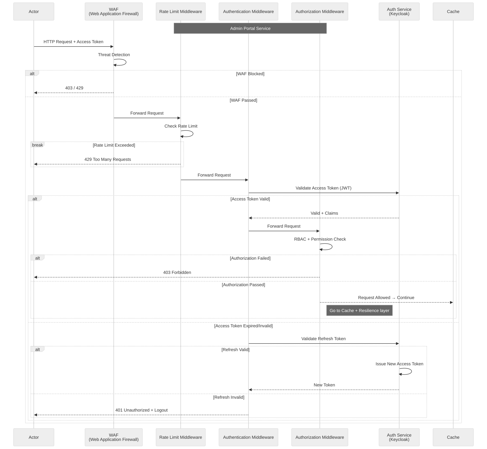
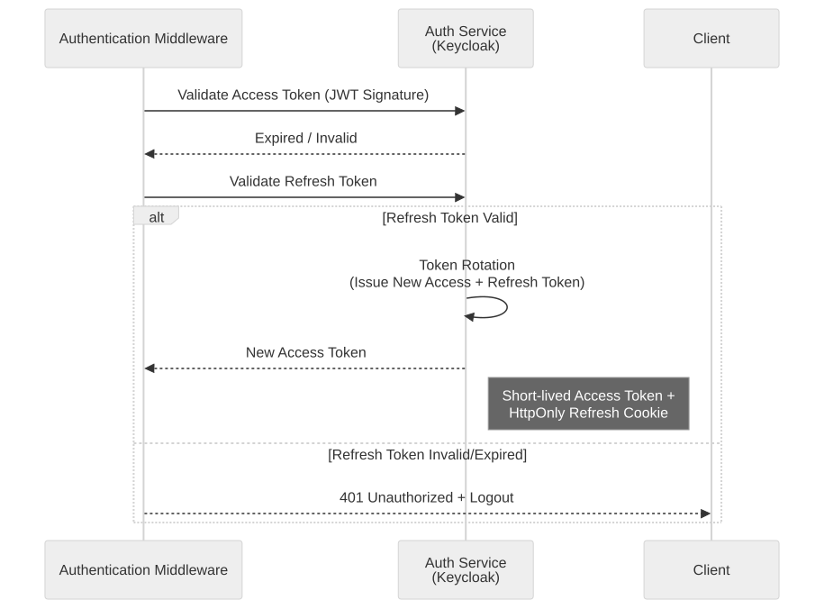
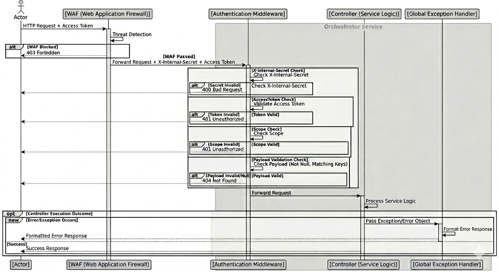

Search Platform Architecture
Multi-Tenant Search Infrastructure & Service Orchestration
A distributed multi-tenant search platform designed for low-latency routing, autonomous configuration reconciliation, and resilient service orchestration.
Executive Summary
Target Position: Backend Engineer — Distributed Systems & Platform Infrastructure
Core Engineering Areas: Gateway Routing, Tenant Isolation, Configuration Synchronization, and Reliability Engineering.
Technical & Operational Status: A functional platform prototype built and validated under load, utilizing YARP routing, logical tenant keyword indexing, and local in-memory configuration synchronization to eliminate direct database lookups.
Engineering Ownership
- ✓ Gateway Redesign: Contributed to YARP-based gateway redesign, eliminating redundant downstream calls and implementing node-local caching.
-
✓
Tenant Isolation: Engineered the
IScopedRequestValidatorpipeline and automatic DSL query rewrites viaTenant.keyword. -
✓
Observability & Resilience: Implemented end-to-end W3C
traceparenttracing, Polly retry boundaries, and cancellation propagation.



| Decision | Pain Point | Implementation Strategy | Trade-off Accepted |
|---|---|---|---|
| Distributed Identity Identity |
Requests traversing multiple services made server-side sessions unreliable and difficult to scale. | Adopted JWT-based identity propagation using Keycloak, validating claims at the edge gateway to ensure stateless scalability. | Accepted complexity in token lifecycle management and revocation synchronization. |
| Request-Level Caching Performance |
Repeated identical search requests created unnecessary downstream load and increased latency. | Implemented short-lived node-local response caching with tenant-aware partitioning at the proxy level. | Accepted potential stale data for up to 60 seconds to gain significant stability and throughput. |
| In-Memory Config State Consistency |
Runtime configuration lookups created operational dependency on config services and increased request p99. | Gateway preloads routing and system state into memory during startup, utilizing event-driven refresh. | Accepted temporary configuration drift between nodes during update windows for lower request latency. |
| Gateway Resilience Reliability |
Transient downstream failures risked cascading outages across dependent services during spikes. | Applied centralized retry and circuit breaker policies using Polly for all outbound proxy communication. | Accepted increased retry latency and temporary request rejection to prevent total system collapse. |

| Decision | Pain Point | Implementation Strategy | Trade-off Accepted |
|---|---|---|---|
| Zero-Trust Tenant Scoping Isolation |
Shared OpenSearch clusters introduced high risks of accidental cross-tenant data exposure through broad queries. | Enforced infrastructure-level `Tenant.keyword` injection in every DSL query, ensuring strict logical partitioning at the core retrieval layer. | Accepted higher DSL complexity to guarantee strict logical tenant isolation. |
| Application-Level Scoped Check Security Validation |
Gateway-only filtering was insufficient to prevent IDOR-style attacks on internal resource identifiers. | Implemented `IScopedRequestValidator` to cross-reference JWT tenant claims with resource owner metadata for every business operation. | Accepted minor validation latency for robust defense-in-depth security. |
| Tenant Context Propagation Context Propagation |
Manual propagation of tenant identifiers created excessive boilerplate and increased risk of logic leaks. | Adopted a Scoped `ITenantContext` pattern, automatically propagating identity from the pipeline to deep infrastructure layers. | Accepted dependency on scoped context services in the data layer. |
| Lightweight Internal Auth Internal Trust |
Internal orchestration traffic in small environments required a trust boundary without the complexity of a full service mesh. | Implemented a shared secret header validation for service-to-service calls as a lightweight internal trust mechanism within private virtual network scopes. | Accepted limited protection against advanced insider threats vs full mTLS, deemed acceptable for low-complexity internal private networks. |
Observability Pipeline
Implemented OpenTelemetry-based distributed tracing with W3C traceparent propagation and unified Correlation IDs across async search flows. Structured logs were centralized through Serilog, enabling rapid cross-service incident debugging and significantly reducing MTTR during production failures.
Failure Containment
Designed with a fail-fast resilience model using Bulkhead Isolation, Circuit Breakers, strict timeout budgets, and end-to-end CancellationToken propagation. This prevents transient downstream latency from exhausting shared resources or cascading into platform-wide outages.
Asynchronous Offloading
Engineered with a non-blocking request pipeline using .NET Hosted Services and bounded in-memory queues. Concurrency is optimized via Lock Striping using a hash-indexed lock array, decoupling heavy telemetries from the search hot path without lock contention.
| Failure Source | System Behavior & Mitigation | Resilience Strategy |
|---|---|---|
| Config Service Down | Gateways continue serving traffic using stale configuration from local memory. | Stateless Fallback |
| OpenSearch Latency | Circuit breaker opens to prevent thread exhaustion; search returns degraded results. | Bulkhead Isolation |
| Redis Cache Failure | Transparent fallback to direct OpenSearch query with throttled retry logic. | Graceful Degradation |
| Keycloak Spikes | JWT validation persists using locally cached JWKS public keys. | Identity Resilience |
| Secret Mismatch | Immediate request rejection with high-priority security audit logging. | Zero-Trust Defence |
The platform decouples environment parameters, business rules, and security scopes from the compiled codebase. All environment profiles are consolidated within the version-controlled Git repository. Through Spring Cloud Config Server and Steeltoe .NET integrations, configurations are dynamically injected at runtime, providing auditability and zero-downtime hot reloading.
Centralized Config Registry
Decouples sensitive configurations, OpenSearch connection settings, and feature flags from compiled C# code assemblies.
Every profile modification is managed via Pull Requests, ensuring rigorous peer reviews and complete traceability of system environment changes.
Dynamic Injection Engine
Integrates Steeltoe ConfigServer client within Program.cs, pulling properties dynamically from the centralized Azure Config Center.
Configuration updates trigger dynamic refresh events in the containerized services, updating parameters without restarting critical backend instances.
This search platform was intentionally designed around operational simplicity, predictable failure states, and resilient tenant isolation under real-world infrastructure constraints, rather than theoretical architectural perfection.
Deliberate Decisions
Accepted a transient 30-60s configuration drift across nodes to prioritize fast local lookups and avoid distributed locks.
Enforced multi-tenant isolation via dynamic query filter injection on a shared cluster to control infrastructure hosting costs.
Substituted heavy service mesh topologies with gateway-injected shared secret headers restricted within private subnets.
Out of Scope
Excluded cross-region multi-master synchronization to keep deployment zones deterministic and simple.
Omitted complex cache invalidation brokers, relying on local node time-to-live bounds to maintain decoupling.
Excluded heavy Kubernetes scaling controllers and Helm operators during this sandbox and validation stage.
System Roadmap
Adding per-tenant search query aggregation throttling at the gateway layer to prevent cluster noisy-neighbor degradation.
Planning a Redis pub-sub configuration refresh channel to instantly trigger local node cache invalidation upon updates.
Expanding the C# background worker queue pattern to move heavy document mutations and synonym updates off the search HTTP hot path.
"The goal was not to build a theoretically perfect distributed system, but to design a pragmatic search platform that balances high availability, operational simplicity, and strict logical tenant isolation under realistic engineering constraints."